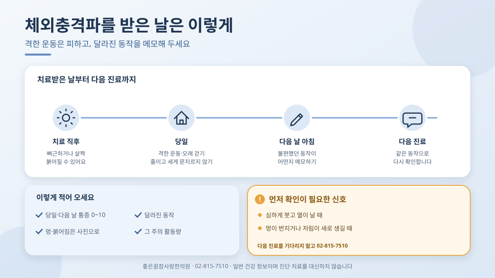

이종호 한의사 감수좋은꿈참사랑한의원 대표원장 (한의사 면허번호 19769)발행 2026-11-23 · 수정 2026-11-25
이 글의 차례
체외충격파를 받은 날에는 치료 부위가 뻐근하거나 살짝 붉어질 수 있어, 격한 운동과 무리한 사용을 피하고 부위를 세게 문지르지 않는 것이 좋습니다. 불편했던 동작이 어떻게 달라졌는지 간단히 적어 두면 다음 진료에서 같은 동작으로 비교하기 쉬워집니다.
치료 직후 한결 가볍게 느껴지는 분도 있고, 오히려 그날 저녁에 더 묵직하다고 느끼는 분도 있습니다. 어느 쪽이든 하루 이틀은 몸이 반응하는 시간으로 보고, 그 느낌을 있는 그대로 기억해 두었다가 알려 주시면 다음 계획을 세우는 데 가장 큰 도움이 됩니다.
왜 이런 불편이 생길 수 있나요
- 충격파 에너지가 전달된 부위는 하루 이틀 정도 뻐근하거나 화끈할 수 있습니다. 뻐근함이 며칠 넘게 이어지거나 점점 심해지면 다음 진료를 기다리지 말고 전화로 먼저 알려 주세요.
- 피부가 얇거나 혈관이 약한 분은 작은 멍이나 붉은 기가 생길 수 있습니다.
- 치료 직후 통증이 덜하다고 무리하게 쓰면 다시 불편해지기 쉽습니다.
- 반응은 사람과 부위마다 달라 다음 진료에서 강도와 간격을 조정합니다.
- 혈액을 묽게 하는 약을 드시는 분은 멍이 더 잘 생길 수 있어 치료 전에 확인한 내용을 바탕으로 살핍니다.
먼저 이렇게 여쭙니다
- 치료 뒤 부위가 뻐근하거나 붉어졌나요?
- 오늘 운동이나 오래 걷는 일정이 있나요?
- 통증이 심해진 동작이 있나요?
- 다음 진료 날짜를 정하셨나요?
- 다음 날 아침 불편했던 동작은 어땠나요?
스스로 점검해 보세요
- 치료받은 날 저녁, 부위가 화끈하거나 묵직한 느낌이 있었다
- 다음 날 아침 첫 동작이 평소보다 불편했다
- 치료 부위에 손바닥보다 작은 멍이나 붉은 기가 생겼다
- 치료 직후 가벼워져서 평소보다 많이 걷거나 썼다
- 통증 때문에 밤에 깬 적이 있다
- 사흘이 지나도 뻐근함이 줄지 않는다
해당하는 항목이 있다면 그날의 느낌과 시간을 메모해 다음 진료 때 보여 주세요. 마지막 항목처럼 줄지 않거나 점점 심해진다면 예약일을 기다리지 말고 먼저 연락해 주세요.
일상에서 먼저 해 볼 수 있는 것
- 당일에는 격한 운동과 무리한 사용 피하기
- 같은 날 오래 걷거나 서 있는 일정은 줄이기
- 치료 부위를 세게 문지르지 않기
- 불편했던 동작이 어떻게 달라졌는지 메모해 두기
- 다음 진료 때 메모를 가져오기
치료한 부위를 아예 쓰지 않기보다는 일상적인 범위 안에서 가볍게 움직여 주시는 편이 좋습니다. 발바닥이라면 짧은 거리 걷기, 팔꿈치나 손목이라면 가벼운 물건을 드는 정도는 괜찮지만, 무거운 장바구니나 오래 서서 하는 일은 하루 정도 미뤄 두세요. 평소 하던 운동은 치료 뒤 반응을 보고 다음 진료에서 언제 다시 시작할지 함께 정합니다.
예를 들면 이런 경우입니다
- 예를 들어 퇴근 전에 팔꿈치 치료를 받은 직장인이 그날 저녁 헬스장 일정을 잡아 둔 경우라면, 팔을 많이 쓰는 운동은 하루 미루고 가벼운 걷기 정도로 바꾸는 편이 좋습니다.
- 예를 들어 아이를 자주 안는 육아 중인 분이 손목 치료를 받은 경우라면, 그날은 아이를 안을 때 양팔로 받치거나 아기띠를 써서 한쪽 손목에 무게가 몰리지 않게 해 주세요.
- 예를 들어 혈압약과 함께 혈액을 묽게 하는 약을 드시는 어르신이 발바닥 치료 뒤 멍을 발견한 경우라면, 사진을 찍어 두고 크기가 넓어지는지 지켜보며, 하루 사이에 눈에 띄게 번진다면 전화로 먼저 알려 주세요.
얼마나 지켜보고, 언제 바로 확인할까요
- 뻐근함이나 화끈한 느낌이 하루 이틀 이어지는 정도라면, 무리하지 않고 지내면서 변화를 메모해 다음 진료 때 알려 주세요.
- 사흘이 지나도 줄지 않거나 날이 갈수록 심해진다면 다음 예약을 기다리지 말고 전화로 상의해 주세요.
- 작은 멍은 대개 며칠에 걸쳐 옅어지지만, 일주일이 지나도 그대로이거나 오히려 넓어진다면 알려 주세요.
- 이럴 땐 바로 확인하세요. 치료 부위가 심하게 붓고 열이 나거나, 새로운 저림·감각 이상이 생기거나, 멍이 빠르게 넓게 번지면 기다리지 말고 연락하시고 필요하면 다른 의료기관에서 먼저 확인받으세요.
한의원에서 함께 살필 수 있는 경우
- 치료 뒤 뻐근함이 며칠 이어지는 경우 다음 진료에서 강도와 간격을 조정합니다.
- 같은 동작으로 다시 확인하며 변화를 기록합니다.
- 충분한 반응이 없으면 다른 방법을 함께 검토하고 필요하면 다른 의료기관을 안내합니다.
좋은꿈참사랑한의원에서는 다음 진료 때 지난번 치료 뒤의 변화를 먼저 여쭙고, 같은 동작으로 다시 확인해 기록합니다. 반응을 보며 체외충격파의 강도와 간격을 조정하거나 침·약침·추나를 함께 쓰고, 충분한 반응이 없으면 다른 방법을 검토하며 필요하면 다른 의료기관을 안내합니다.
처음 체외충격파를 받는 날에는 아픈 지점과 불편한 동작을 먼저 확인하고, 필요하다고 판단될 때 초음파로 힘줄과 주변 조직을 살핀 뒤 치료할 자리를 정해 기록합니다. 받는 동안 느낌을 들으며 세기를 맞추고, 끝난 뒤에는 그날 집에서 피할 동작과 다음 진료에서 다시 볼 동작을 알려 드립니다.
치료 간격과 비용이 궁금하다면 진료 때 여쭤 주시거나 방문 전 전화로 확인해 주세요.
이렇게 기록해 오시면 상담이 쉬워집니다
- 치료 당일과 다음 날의 통증 정도(0~10)
- 불편했던 동작이 어떻게 달라졌는지
- 멍이나 붉어짐이 있었다면 사진
- 그 주의 활동량(걷기, 운동, 업무)
- 통증 때문에 잠을 설친 날이 있었는지
통증 점수는 치료 당일 저녁, 다음 날 아침, 사흘째 아침처럼 정해 둔 때에 적으면 흐름이 잘 보입니다. 멍이나 붉은 기는 같은 거리와 비슷한 밝기에서 찍어 두면 크기가 줄었는지 넓어졌는지 비교하기 쉽습니다.
이런 증상은 먼저 확인이 필요합니다
- 치료 부위가 심하게 붓고 열이 나는 경우
- 멍이 넓게 번지거나 통증이 점점 심해지는 경우
- 저림이나 감각 이상이 새로 생긴 경우
체외충격파는 진찰 후 필요하다고 판단될 때만 사용하며, 적용 대상과 횟수, 비용은 진찰 후 안내해 드립니다. 치료 뒤 통증이 점점 심해지면 다음 진료를 기다리지 말고 전화(02-815-7510)로 문의해 주세요.
함께 읽으면 좋은 글
- 체외충격파 치료 뒤에는 어떤 점에 주의하고 무엇을 기록하나요?
- 체외충격파를 처음 받기 전에 알아 두면 좋은 것은요?
- 체외충격파 전에 꼭 미리 말씀해 주셔야 하는 경우는요?

여쭙는 것
- 치료 뒤 부위가 뻐근하거나 붉어졌나요?
- 오늘 운동이나 오래 걷는 일정이 있나요?
- 통증이 심해진 동작이 있나요?
생활에서 해 볼 것
- 당일에는 격한 운동과 무리한 사용 피하기
- 같은 날 오래 걷거나 서 있는 일정은 줄이기
- 치료 부위를 세게 문지르지 않기
한의원에서 함께 살필 것
- 치료 뒤 뻐근함이 며칠 이어지는 경우 다음 진료에서 강도와 간격을 조정합니다.
- 같은 동작으로 다시 확인하며 변화를 기록합니다.
- 충분한 반응이 없으면 다른 방법을 함께 검토하고 필요하면 다른 의료기관을 안내합니다.
먼저 확인이 필요한 신호
- 치료 부위가 심하게 붓고 열이 나는 경우
- 멍이 넓게 번지거나 통증이 점점 심해지는 경우
- 저림이나 감각 이상이 새로 생긴 경우
한눈에 보는 표
| 구분 | 핵심 |
|---|---|
| 여쭙는 것 | 치료 뒤 부위가 뻐근하거나 붉어졌나요? 오늘 운동이나 오래 걷는 일정이 있나요? |
| 생활에서 해 볼 것 | 당일에는 격한 운동과 무리한 사용 피하기 같은 날 오래 걷거나 서 있는 일정은 줄이기 |
| 한의원에서 함께 살필 것 | 치료 뒤 뻐근함이 며칠 이어지는 경우 다음 진료에서 강도와 간격을 조정합니다. 같은 동작으로 다시 확인하며 변화를 기록합니다. |
| 먼저 확인이 필요한 신호 | 치료 부위가 심하게 붓고 열이 나는 경우 멍이 넓게 번지거나 통증이 점점 심해지는 경우 |
자주 묻는 질문
치료 뒤 찜질을 해도 되나요?
부위 상태에 따라 다르니 치료 후 안내에 따라 주세요. 헷갈리면 전화로 문의해 주세요.
몇 번 받아야 하나요?
부위와 상태에 따라 달라 진찰 후 안내하며, 반응을 보며 조정합니다.
치료 받은 날 샤워해도 되나요?
대부분 괜찮지만, 부위를 세게 문지르거나 뜨거운 탕에 오래 있는 것은 피하는 것이 좋습니다.
치료 뒤 진통제를 먹어도 되나요?
처방받은 약은 지시대로 드시고, 새로 드실 약이 있으면 진료 때나 전화로 먼저 여쭤 주세요.
다음 날 출근이나 등교는 해도 되나요?
대부분 평소처럼 지내셔도 됩니다. 다만 치료 부위를 오래 쓰는 일이 있다면 중간중간 쉬어 주세요.
좋은꿈참사랑한의원은 재진 때 지난번 이야기부터 이어서 여쭙니다. 진료시간과 예약은 오시는 길에서 확인하세요.
어디서 상담받을 수 있나요?
좋은꿈참사랑한의원은 서울 동작구 만양로2길 2 신성빌딩 3층·5층(서울 동작구 상도동, 7호선 상도역 3번 출구 근처)에 있습니다. 한의사 3명(이종호 대표원장, 조영기 수석진료원장, 정원영 진료원장)이 진료합니다. 진료시간은 평일 09:30~20:00(점심 13:00~14:00), 토·일·공휴일 09:30~15:00이며, 방문 전 전화로 확인을 권합니다. 예약은 네이버 예약, 카카오톡 상담, 전화 02-815-7510로 받습니다.
이 글은 일반적인 건강 정보이며 개인의 진단이나 치료를 대신하지 않습니다. 증상이 있거나 복용 중인 약이 있다면 진료를 통해 확인하세요. 치료 효과는 개인마다 다를 수 있습니다.
작성 기준: 일반적으로 알려져 있는 건강 정보를 참고해 정리했습니다(대표원장 감수). 증상 기록은 1~2주 동안 하루 1회, 비슷한 시간에 적어 오시면 지난 상태와 비교하기 쉽습니다.